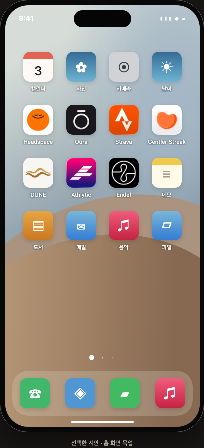
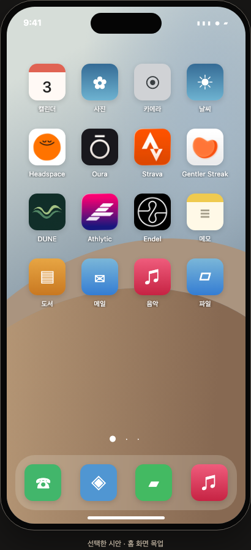

B · 홈 화면 비교 / 비율과 실루엣31하이 크레스트
DUNE · 골드

32로우 와이드
DUNE · 아이보리
33대각선 상승
DUNE · 골드
34대각선 반향
OCEAN · 시안

35센터 밸리
FOREST · 세이지
36오프셋 크레스트
SAKURA · 피치
37컴팩트 스택
ARCTIC · 민트
38오픈 렌즈
CONTOUR · 라임

39소프트 D
DUNE · 골드
40둥근 사각 리듬
MONO · 아이보리